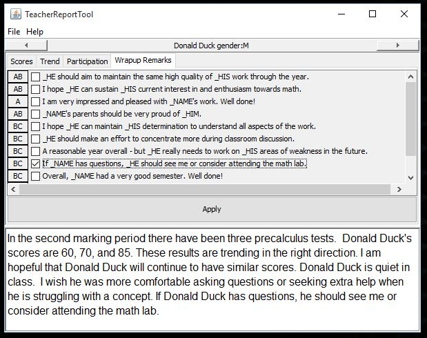

This tool (TRT) is to assist teachers when writing individualized comments for each student by using sentence templates that when selected are filled in with the student name and correct gender pronouns. The tool iterates through the students and allows the teacher to click on the appropriate sentences for each student.

Fig. 1: Image of Teacher Report Tool
There are two required input files:
To get started from the menu bar select:
This file contains the name and gender of each student, one student per line. The first character of each line is M or F to indicate male or female. The student's name follows this initial character. Here is an example:
M Donald Duck
F Minnie Mouse
M Bugs Bunnie
F Flipper
This file contains the sentence templates. All occurrences of _NAME in a template are replaced with the student's name. Similarly, any occurrence of _HE, _HIM, and _HIS are replaced with the gender appropriate pronoun. Additionally, _SON is replaced with son or daughter, and _MAN is replaced with man or woman, as appropriate.
The sentence templates are in categories. Example categories might be:
A new category is indicated by a line that begins with ". Here is an example of a sentence template file:
"Current Performance
_NAME is do extremely well.
_NAME is not performing to _HIS potential.
"Class Work
_HIS classwork is always excellent.
_NAME is not always focused so _HIS classwork suffers.
"Homework
It is obvious that _NAME takes great pride in _HIS homework.
Too often _NAME has not completed _HIS homework.
"Conclusion
It is a pleasure having _NAME in class.
_NAME should seek extra help to improve _HIS current grade.
It is often desirable to have a brief comment that describes a specific sentence.
For example the Current Performance category could be coded as
"Current Performance
A Work# _NAME is do extremely well.
C Work# _NAME is not performing to _HIS potential.
Here the first sentence has the comment A Work and the second C Work.
Notice that comments start the line and ends with a #.
The comment is displayed with the sentence template to more readily identify the appropriate comment for a
student.
It is possible to open both input file together, if both files have the same name except for the extension and they are in the same directory. To open both files together, from the menubar select File → Open Both Files…. An example of how the files would be named to use this option is:
There are left and right arrows to advance to the next student or return to a prior student. There is a tab for each category of comments. On the tabbed pane select the desired comments to be included in the report. The student reports are editable in the student report box.
From the menu bar select File → Save as… to specify the file to be written with all student reports. Alternatively, the report text can be copied from the editable text window and then pasted into another document.
.trn..trs. The two input files should be stored in the same directory. java -jar TeacherReportTool.jar. You may have to include the path to the java executable and TeacherReportTool.jar..trn and *.trs, and because they are in the same directory, both files will be opened simultaneously. .trs (Sentence Templates file) and reloading this file using File → Open Sentence Templates… from the menubar. This tool is similar to the Teachers Report Assistant available at www.rayslearning.com/repview.htm.